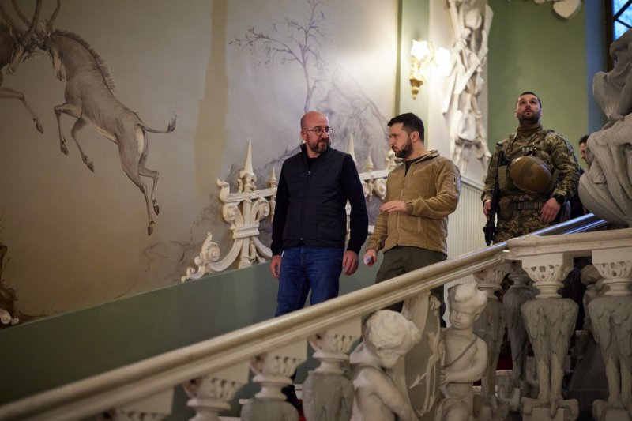

![NTK]()

Russia's finance ministry announced tax increases this week aimed at sustaining the invasion of Ukraine (Financial Times). The move landed on the same day Vladimir Putin's forces launched a wave of strikes that killed eight people, including six agricultural workers in Kharkiv whose deaths were confirmed by Ukraine's interior minister, Ihor Vyhivskyi (Deutsche Welle). Kyiv's Prime Minister Serhiy Koretsky reported two more deaths in the capital the same day, and officials in Odesa said strikes there sparked a fire at a shopping mall (Deutsche Welle). The timing was not incidental. Volodymyr Zelensky was mid-speech at the UN General Assembly when the strikes hit, telling delegates that Putin has become "patient zero" for spreading war beyond Ukraine's borders (France 24), and Al Jazeera's footage from New York showed the assembly hall absorbing the news of fresh casualties in real time as he spoke (Al Jazeera).
A tax hike to keep artillery firing is one kind of commitment. Ukraine made a different one: a school profiled this week is now teaching children to pilot the same drones that have become the war's signature weapon, a measure of how deep into civilian life the conflict has reached that no ceasefire announcement has managed to touch (CBS News). That gap between announcement and reality has a recent precedent. Donald Trump claimed last week that Russia and Ukraine had both agreed to stop striking each other's energy infrastructure (The Telegraph), a claim Moscow never confirmed and Zelensky met with visible caution, saying only that Ukraine was "not convinced that Russia is willing to abide by an agreement" (Deutsche Welle). This week's strikes on Kharkiv, Kyiv and Odesa answered that skepticism.
The diplomatic track moved forward anyway, on Washington's terms. Secretary of State Marco Rubio confirmed the U.S. has invited Putin to the G20 summit in Miami in December, following a meeting with Russian counterpart Sergei Lavrov on the sidelines of the same UN gathering Zelensky addressed (Deutsche Welle). The European Union answered within a day: spokesman Olof Gill said the bloc would keep condemning the invasion at the summit "irrespective of the participants," a formula that commits to nothing but also concedes nothing (Deutsche Welle). Putin has skipped the last two G20 summits he was invited to, in Bali and New Delhi. Whether the strikes that punctuated Zelensky's UN speech tell Miami's hosts anything about what a Putin visit would actually produce is the question nobody in New York answered this week.
Miami is now a deadline, not a summit, and both sides are negotiating what happens before anyone arrives.
Zelensky will keep pressing Washington for a written guarantee on energy strikes, and he will not get one before Putin decides on Miami. Rubio's invitation puts the Kremlin in control of the next twelve days: Putin has skipped two prior G20s without cost, and he now has fresh leverage in the Kharkiv and Kyiv strikes, which showed Moscow can escalate the week a ceasefire claim surfaces and pay no diplomatic price. The most likely outcome is a Kremlin answer built for delay, not decision, something short of acceptance and short of a formal no, timed to string out through October while Russian strikes continue on schedule. Zelensky's "patient zero" framing at the UN was aimed at foreclosing exactly that ambiguity, and it will fail to, because Rubio has already signaled Washington wants Putin in the room regardless of what happens on the ground between now and December.
That leaves the EU holding a position built to survive contact with either answer. Olof Gill's formula, condemning the war "irrespective of the participants," will get repeated almost verbatim by European officials over the next two weeks, because it is designed to require nothing further of them. The most consequential test comes if Putin says yes: France, Germany and Italy, all G20 members and all allies who have called for Russia's exclusion, will have to decide whether they sit in the same room as a leader they will not agree to unseat. Expect that decision to get made quietly, through staffing and seating arrangements, not through any public break with Washington. The EU's credibility on Ukraine will not be tested by what it says at Miami. It will be tested by whether any member state actually walks out if he shows up, and the smart money says none of them do.
Citi's closed-door investment meeting on the UNGA sidelines points to where the money is actually placing its bets. Stephanie Von Friedeburg's push to get defense-sector M&A and venture capital moving into Ukraine, with Treasury and the U.S. Development Finance Corporation's Ben Black at the table discussing war insurance, will accelerate in October regardless of what Putin decides about Miami (Semafor). That is the tell worth watching: private capital is pricing in a war that runs past December, insurance and all, while the diplomats spend the same two weeks negotiating a photo opportunity.
The war economy Ukraine is building has a second half nobody in Kyiv has said out loud yet, and it runs through the same private capital that just showed up at the UN.
Citi's push to get defense-sector M&A moving in Ukraine creates a financial constituency that didn't exist a month ago, and that constituency needs the war to keep running on a schedule investors can price. War insurance, venture capital and M&A activity all depend on some baseline assumption about how long the fighting lasts and at what intensity. Once Treasury officials and the Development Finance Corporation's Ben Black sit at a table discussing war insurance for Ukrainian assets, someone at Citi has to build a model, and that model needs an answer to a question nobody in Miami is being asked: what happens to that capital if Putin actually walks into the G20 in December and the war doesn't end, just changes shape. The tax hikes in Moscow point one way, toward a Kremlin financing structure built for years, not months. If investors start pricing Ukraine risk the way they'd price any other frontier market at war, funding for Kyiv's defense industry could become durable in a way that outlasts whatever ambiguous answer Putin sends back on Miami. That's a door that wasn't reachable before this week, because until Citi organized this meeting, the money and the diplomacy were running on separate tracks.
Walking through that door is what makes the next one visible.
If private capital treats the war as a long-duration bet, Kyiv's drone-training school stops being a wartime improvisation and starts becoming an export line. A country that is teaching fifth-graders to fly attack drones is, whether or not anyone in Kyiv frames it this way, building a domestic manufacturing and training base that other countries at risk of drone warfare, the U.K. among them, might eventually want to buy from or study. The Ministry of Defence in London is already recording several hundred drone incidents a year at its own bases and admitting it doesn't know who's flying most of them. Put those two facts in the same room: a Ukrainian training and production pipeline that scales because investors are funding it as a long-term bet, and a NATO ally with a documented detection gap and no domestic pipeline of its own. That combination wasn't available last month because the investment case for Ukrainian defense manufacturing hadn't been made publicly. It is now, at least on the sidelines of the UN, and it opens a door where Ukraine's wartime necessity becomes someone else's procurement contract.
None of this requires Putin to say yes to Miami, which is what makes it different from the diplomatic track. The G20 invitation is a two-week bet on a single man's calendar. The Citi meeting is a bet on a market, and markets don't need Moscow's cooperation to keep moving. If that capital keeps flowing whether or not the Kremlin answers Rubio's invitation on schedule, the story stops being about what Putin decides in the next twelve days and starts being about whether Kyiv can turn a wartime necessity into an economy that survives whatever Miami produces or fails to produce. That would be the generative version of this: a war economy that gets built well enough on the investment side that it outlasts the men negotiating around it, the same way American manufacturing capacity outlasted the war planners who first justified building it.
Putin's own foreign ministry spent the week claiming the West started this, and the timing gives away who the audience really is.
Peskov Says Britain Is Manufacturing "Russophobia" to Cover Its Own Failures, and He's Not Talking to London. Dmitry Peskov called Andy Burnham's new National Centre for Information Defence proof that Britain and its allies are "stoking anti-Russian sentiment" for no reason tied to anything Russia has actually done (The Independent). The claim asks the listener to believe the disinformation unit exists because London needed an enemy, not because Russian agencies were caught interfering with the 2019 election and falsifying newspaper articles, which Burnham's own speech cited by name. Peskov's framing has a use for Russians who never see the drone incident data: a citizen watching state television has no way to weigh the claim against 340 documented drone incursions at British defense sites in the year to August, a figure security officials link to Moscow and Tehran. Peskov benefits twice over. At home, the line reinforces the Kremlin's standing story that Russia is a besieged nation responding to Western aggression, which is the same justification used for the tax increases funding the war. Abroad, it hands sympathetic voices in Western politics, the kind who already distrust their own intelligence services, a ready-made talking point: if the Kremlin calls it Russophobia, some listeners will hear confirmation that Burnham overreached. The claim lands the same week Putin's forces killed eight people in Kharkiv, Kyiv and Odesa while Zelensky spoke at the UN, which is the inconvenient fact Peskov's statement never has to address because it was never built to survive contact with it. This is the same rhetorical move Soviet spokesmen used through the Cold War, calling every Western countermeasure evidence of Western paranoia rather than evidence of anything Moscow had done, and it worked then for the same reason it works now: it costs nothing to say and it never has to be true, only repeatable.